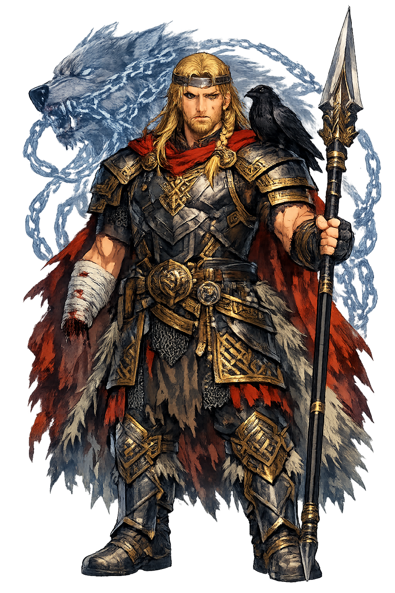

The Authentic Orthography
War, Law, Oaths · God (cognate with Greek Zeus, Latin Jove)

Unicode restoration and ASCII comparison
ᛏᚢᚱ
The name in its original Norse form. Týr (ᛏᚢᚱ) is attested in the source tradition — “God (cognate with Greek Zeus, Latin Jove)”. Its original diacritics and script distinctions carry the full phonetic and orthographic weight of the source tradition.
tyr
Reduced to plain tyr, the name loses everything that made it specific: original diacritics and script distinctions. What remains is an ASCII string that machines can parse but that no longer speaks with its original voice.
Týr
The Unicode restoration recovers what ASCII flattened. Týr restores original diacritics and script distinctions, returning the name to its original written dignity. The domain encodes to Punycode, but the browser displays the truth.
Týr.com → xn--tr-0ka.com
The non-ASCII characters in Týr are encoded while the ASCII remains visible. To the DNS, it is Punycode. To humanity, it is Týr.
How Týr travels from ancient script to the modern URL
Old Norse Týr; from Proto-Germanic *Tīwaz, cognate with Greek Zeus and Latin Juppiter; the one-handed god of law and war.
War, Law, Oaths
The Unicode restoration Týr uses registrable Thorn and vowel accents; the runic form is not used because runic TLD support is impractical.
How Týr was spoken
Attributes of Týr
The clash of arms, the discipline of the phalanx, and the courage that turns the tide.
The wall between civilization and chaos, the defense of hearth and law.
Stories of Týr
Shrines, festivals, and votive offerings across the norse world invoked Týr as war, law, oaths. Worshippers did not simply tell stories about this power; they enacted it through sacrifice, song, and the careful observance of ritual. The name was a password: to speak it correctly was to align oneself with the force it named.
Poets and priests wove Týr into hymns, genealogies, and mythic narratives. Whether as a major protagonist or a background power, the name carried a charge that later authors returned to again and again. Each retelling adjusted the portrait, but the core identity — war, law, oaths — remained recognizable.
After the temples fell silent, the name lived on in language, art, and the names of places and stars. It entered classical education, romantic poetry, and modern fantasy. To restore Týr in Unicode is not nostalgia; it is the recognition that a name with this much history still has work to do.
The lore you have read is the surface — the living myth. Beneath it lies the scholarship: etymology, reconstructed pronunciation, Unicode character breakdown, and the cultural legacy of Týr.
Enter Extended Lore